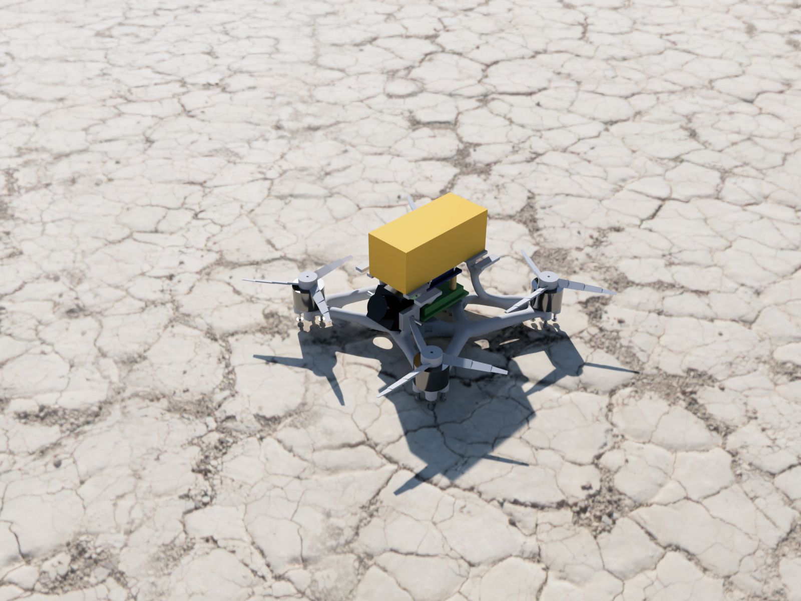

A generatively designed 3-inch FPV drone frame
A 38 g printed frame, 36% lighter than a comparable plate frame, that keeps the complete drone at 246 g, under the UK CAA's 250 g threshold. Arm deflection measured at maximum thrust agreed with Ansys to within 18%.


Loading model
| Item | Part | Qty | Mass |
|---|---|---|---|
| 1 | 1 | 38 g | |
| 2 | 4 | ||
| 3 | 4 | ||
| 4 | 1 | ||
| 5 | 1 | ||
| 6 | 1 | ||
| 7 | 1 | ||
| 8 | 8 | ||
| 9 | 26 | ||
| All-up | 47 | 246 g |
Approach
I derived eight operational load cases, including maximum thrust, arm collision and battery impact, to define the design envelope and starting geometry.
I then ran Fusion's generative optimisation under those loads with buckling, modal frequency (above 300 Hz) and 1.5 safety-factor constraints. The selected topology is 36% lighter than a comparable plate-based frame.
Build and testing
I printed the frame in PC/ABS for impact toughness. It weighs 38 g, and the fully assembled drone comes to 246 g, under the 250 g threshold.
I measured arm deflection at maximum thrust and compared it with Ansys Mechanical; the two agreed to within 18%.